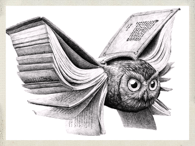
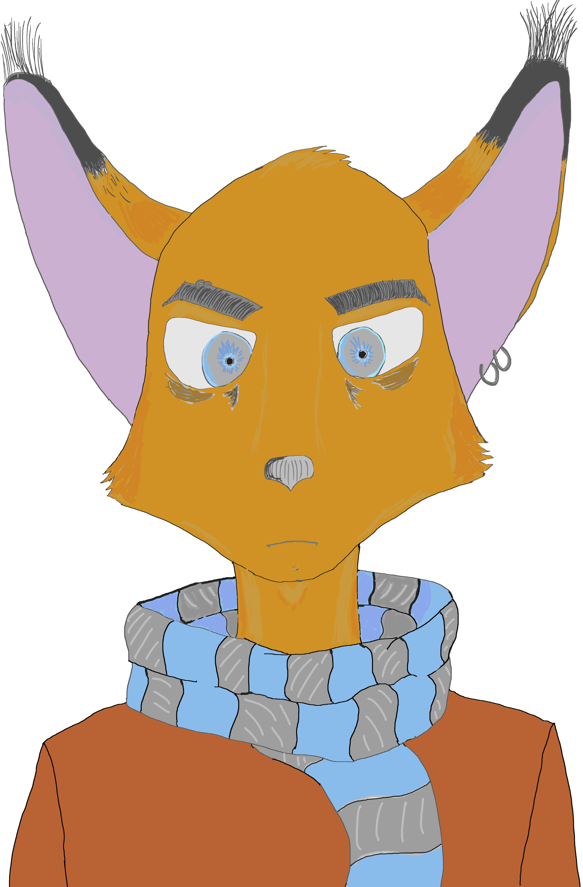

|  |
Умение рисовать позволит вам воплотить в жизнь большенство своих идей |
|
Ты никогда не нанесешь хорошие тени
|
|
нарисовать кнтур пол беды, его ещё и раскрасить надо!
Заключительный ШАГ:Тени, тени везде!Многим может показаться что наношение теней это самое сложное.
Осталось лишь нанести Мелкие детали (пирсинг, шрамы и т.д.)!  |
|
|
Курс Web-дизайн © Такташов Егор
web-мастер: egorka-1999@bk.ru |
|